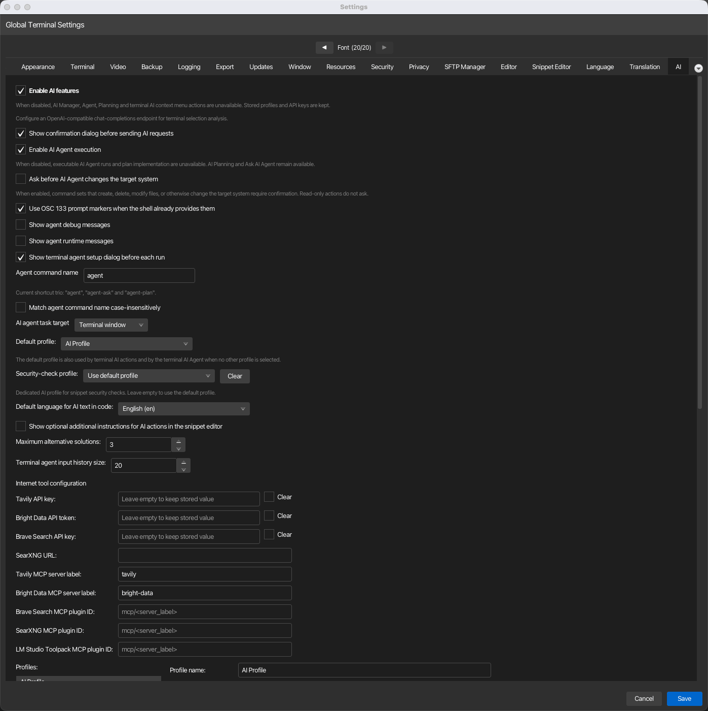
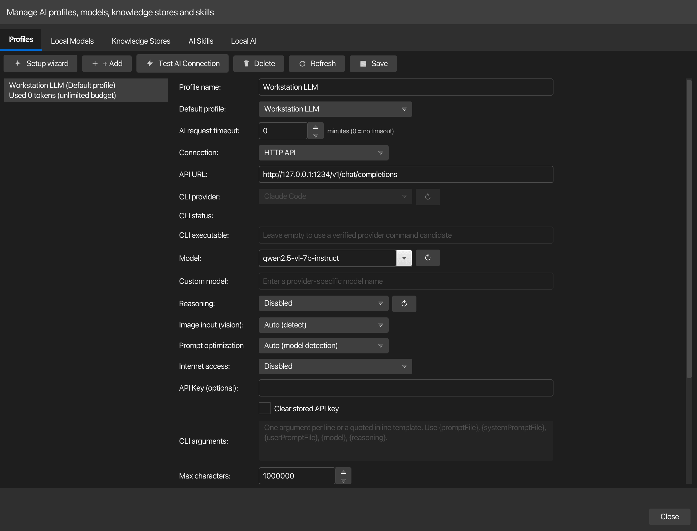

AI¶
Konfigurieren Sie AI-Profile und Terminal-AI-Agent-Einstellungen. Dies ist die größte Einstellungsregisterkarte und umfasst die Aktivierung von KI-Funktionen, Profile (mit Modell, API-Endpunkt, Verbindungsmodus und Reasoning-Ebenen), Token-Kontingentverwaltung, Snippet-Editor-Einstellungen und Internetzugangskonfiguration. Öffnen über Konfiguration → Globale Einstellungen → AI; in ~/.kortty/global-settings.xml gespeichert.

Core-Einstellungen¶
| Einstellung | Typ | Werte | Standard | Gespeichert als |
|---|---|---|---|---|
| KI-Funktionen aktivieren | umschalten | – | Ein | aiFeaturesEnabled |
| Bestätigungsdialog vor dem Senden von AI-Anfragen anzeigen | umschalten | – | Ein | aiConfirmBeforeSend |
Terminal-KI-Agent¶
| Einstellung | Typ | Werte | Standard | Gespeichert als |
|---|---|---|---|---|
| AI Agent-Ausführung aktivieren | umschalten | – | Ein | terminalAgentExecutionEnabled |
| Fragen Sie nach, bevor AI Agent das Zielsystem ändert. | umschalten | – | Aus | terminalAgentConfirmMutatingCommandSets |
| Verwenden Sie OSC 133-Eingabeaufforderungsmarkierungen, wenn die Shell sie bereits bereitstellt. | umschalten | – | Ein | defaultPromptHookEnabled |
| Agent-Debug-Meldungen anzeigen | umschalten | – | Aus | terminalAgentShowDebugMessages |
| Agent-Laufzeitmeldungen anzeigen | umschalten | – | Aus | terminalAgentShowRuntimeMessages |
| Terminal-Agent-Setup-Dialogfeld vor jeder Ausführung anzeigen | umschalten | – | Ein | terminalAgentShowRunDialog |
| Agentenbefehlsname | Text | – | Agent | terminalAgentCommandName |
| Agentenbefehlsnamen ohne Berücksichtigung der Groß- und Kleinschreibung abgleichen | umschalten | – | Aus | terminalAgentCommandNameCaseInsensitive |
| AI-Agent-Aufgabenziel | Dropdown-Liste | Terminalfenster, neues Chat-Fenster | Terminalfenster | terminalAgentExecutionTarget |
| Größe des Eingabeverlaufs des Terminalagenten | Nummer | 5–100 | 20 | terminalAgentInputHistorySize |
AI-Profile¶
| Einstellung | Typ | Werte | Standard | Gespeichert als |
|---|---|---|---|---|
| Standardprofil | Dropdown-Liste | (Liste der konfigurierten Profile) | – | defaultAiProfileId |
| Zeitlimit für KI-Anfragen | Nummer | 0–1440 Minuten | 0 (kein Timeout) | aiRequestTimeoutMinutes |
| Sicherheitsüberprüfungsprofil | Dropdown-Liste | (Liste der konfigurierten Profile; leer = Standardprofil verwenden) | – | securityCheckAiProfileId |
Das Sicherheitsüberprüfungsprofil ist ein dediziertes KI-Profil für Snippet-Sicherheitsüberprüfungsaktionen. Lassen Sie es leer (oder verwenden Sie Löschen), um das Standardprofil wiederzuverwenden. Es kann auch direkt im Snippet-Sicherheitsüberprüfungsfenster festgelegt werden, und an beiden Stellen wird dieselbe gespeicherte Einstellung verwendet.
Zeitlimit für KI-Anfragen ist die maximale Laufzeit einer einzelnen AI-Request und gilt für jedes Profil. Der Standardwert 0 bedeutet, dass korTTY überhaupt keine Zeitüberschreitung vorschreibt: Aufgaben mit langer Laufzeit wie die Vollständige Codeanalyse des Snippet-Editors werden ausgeführt, bis das Modell antwortet. Legen Sie eine positive Anzahl von Minuten fest, um Anfragen abzubrechen, die diesen Wert überschreiten. Ein Profil kann den Wert überschreiben – siehe Zeitlimit für dieses Profil unten.
Profileinstellungen (im Editor-Raster)¶
Die gleichen Felder werden unter KI > KI-Manager > Profiles bearbeitet, wo das gesamte Formular auf einmal sichtbar ist:

| Einstellung | Typ | Werte | Standard | Gespeichert als |
|---|---|---|---|---|
| Profile name | text | — | AI Profile | (profile name field) |
| Verbindung | Dropdown-Liste | HTTP-API, lokale CLI, integriertes llama.cpp, integriertes MLX (Apple Silicon; nur auf Apple Silicon Macs verfügbar) | HTTP-API | (Profilfeld connectionMode) |
| API-URL | Text | – | – | (Profilfeld apiUrl) |
| CLI provider | dropdown | (registered providers) | — | (profile cliProviderId field) |
| CLI executable | text | — | — | (profile cliExecutablePath field) |
| Model | dropdown/text | (editable; "Default", curated cloud-provider suggestions plus live-loaded models; "Auto" only for local LM Studio endpoints) | — | (profile model field) |
| Local GGUF model | dropdown | Installed chat models; available when Connection is Integrated llama.cpp | — | (profile embeddedModelId field) |
| Lokales MLX-Modell | Dropdown-Liste | Installierte MLX-Modelle; Verfügbar, wenn die Verbindung „Integrated MLX“ (Apple Silicon) ist. | – | (Profilfeld embeddedModelId) |
| Custom model | text | — | — | (profile cliCustomModel field) |
| Prompt-Optimierung | Dropdown-Liste | Automatisch (Modellerkennung), Generisch, Llama, Qwen, Mistral, Gemma, DeepSeek, Phi, GPT-OSS | Automatisch | (Profilfeld promptPreset) |
| Begründung | Dropdown-Liste | Deaktiviert, Keine, Minimal, Niedrig, Mittel, Hoch, Extra hoch | Deaktiviert | (Profilfeld reasoningEffort) |
| Bildeingabe (Vision) | Dropdown-Liste | Automatisch (Erkennung), Aktiviert, Deaktiviert | Automatisch (Erkennung) | (Profilfeld visionSupport) |
| Internetzugang | Dropdown-Liste | Deaktiviert, KorTTY Tavily Tool, LM Studio Tavily MCP, Bright Data Web MCP, Brave Search MCP, SearXNG MCP, LM Studio Toolpack | Deaktiviert | (Profilfeld internetAccessMode) |
| API Key (optional) | text | (password field) | — | (profile encryptedApiKey field) |
| Max characters | number | 1–50,000,000 | 100,000 | (profile maxSelectionChars field) |
| Timeout for this profile | check box + number | Own timeout off = follow the global timeout; on: 0–1440 minutes (0 = never time out) | Off | (profile requestTimeoutMinutes field) |
| Tokenizer | Dropdown | Schätzung, OpenAI cl100k_base, OpenAI o200k_base, OpenAI p50k_base, OpenAI r50k_base | Schätzung | (Profilfeld tokenizerType) |
| Max tokens | number + unit | (amount: 0–1,000,000; unit: Thousands or Millions) | 0 (unlimited) | (profile tokenLimitAmount, tokenLimitUnit fields) |
| Warning thresholds | number pair | Yellow %: 0–100, Red %: 0–100 | 75%, 90% | (profile tokenWarningYellowPercent, tokenWarningRedPercent fields) |
| Reset | number + anchor date | Period: 1–3650 days; Anchor date | 30 days | (profile tokenResetPeriodDays, tokenResetAnchorDate fields) |
| Test AI Connection | button | — | — | (action only) |
Snippet-Editor¶
| Einstellung | Typ | Werte | Standard | Gespeichert als |
|---|---|---|---|---|
| Standardsprache für AI-Text im Code | Dropdown-Liste | (verfügbare Sprachoptionen) | – | aiCodeTextDefaultLanguage |
| Show optional additional instructions for AI actions in the snippet editor | toggle | — | Off | aiSnippetEditorAdditionalInstructionsEnabled |
| Maximum alternative solutions | number | 1–10 | 3 | aiSnippetAlternativeSolutionCount |
Internetzugriffskonfiguration¶
| Einstellung | Typ | Werte | Standard | Gespeichert als |
|---|---|---|---|---|
| Tavily API key | text | (password field) | — | encryptedAiTavilyApiKey |
| Bright Data API token | text | (password field) | — | encryptedAiBrightDataApiToken |
| Brave Search API key | text | (password field) | — | encryptedAiBraveSearchApiKey |
| SearXNG URL | text | — | — | aiSearxngUrl |
| Tavily MCP server label | text | — | tavily | aiTavilyMcpServerLabel |
| Bright Data MCP-Serverbezeichnung | Text | – | Bright-Data | aiBrightDataMcpServerLabel |
| Brave Search MCP plugin ID | text | — | — | aiBraveSearchMcpPluginId |
| SearXNG MCP-Plugin-ID | Text | – | – | aiSearxngMcpPluginId |
| LM Studio Toolpack MCP-Plugin-ID | Text | – | – | aiLmStudioToolpackMcpPluginId |
Hinweise¶
AI-Profile¶
KorTTY speichert mehrere benannte KI-Profile, jedes mit eigenem Modell, Verbindungsmethode, Reasoning-Einstellungen, Eingabeaufforderungsvoreinstellungen und optionalen Wissensspeichern. Jedes Profil verfolgt seine eigene Token-Nutzung separat. Profile unterstützen drei Verbindungsmodi:
- HTTP-API: Direkte Verbindung zu einem OpenAI-kompatiblen REST-Endpunkt (API-URL, Modellnamen und optionalen API-Schlüssel angeben).
- Lokale CLI: Führen Sie einen lokalen Befehlszeilen-KI-Client aus (konfigurieren Sie den CLI-Anbieter, die benutzerdefinierte ausführbare Datei, die Argumentvorlage und den benutzerdefinierten Modellnamen).
- Integrated llama.cpp: Wählen Sie den installierten Chat-GGUF im Lokalen GGUF-Modell. korTTY erwirbt dafür einen privaten Loopback-
llama-server-Leasing; Die API-URL und der Profil-API-Schlüssel werden von korTTY verwaltet und können nicht bearbeitet werden.
Ein explizit ausgewähltes Profil oder Sicherheitsüberprüfungsprofil bleibt am spezifischsten. Andernfalls verwenden Terminaltextaktionen das konfigurierte Textprofil, Codeaktionen das Codierungsprofil und eine nicht zugewiesene Rolle greift auf das Standardprofil zurück. Konfigurieren Sie diese Rollen und die lokale Laufzeit unter KI > KI-Manager > Local AI; siehe Lokale Modelle mit llama.cpp.
Der KI-Manager ist modusunabhängig und kann geöffnet bleiben, während Sie das Hauptfenster verwenden. Wenn Sie es erneut aufrufen, wird derselbe Manager für dieses Hauptfenster wiederhergestellt und fokussiert, und sein geöffneter primärer Abschnitt bleibt sichtbar mit einer fetten Akzentunterstreichung markiert, wenn Sie mit Steuerelementen in diesem Abschnitt interagieren.
Lokale KI-Manager-Einstellungen¶
| Einstellung | Werte | Standard | Gespeichert als |
|---|---|---|---|
| Text- und Übersetzungsprofil | Konfiguriertes AI-Profil oder Standard verwenden | Standard verwenden | textAiProfileId |
| Codierungsprofil | Konfiguriertes AI-Profil oder Standard verwenden | Standard verwenden | codingAiProfileId |
| Sitzungsjournalprofil | Konfiguriertes AI-Profil oder Standard verwenden | Standard verwenden | sessionJournalAiProfileId |
| RAG-Einbettungsmodell-ID | Installiertes lokales Einbettungsmodell | – | ragEmbeddingModelId |
| llama.cpp-Laufzeitaktualisierungen | Aus, Benachrichtigen, Stabile Updates automatisch installieren | Benachrichtigen Sie mich | llamaRuntimeUpdatePolicy |
| Bevorzugtes Laufzeit-Backend | Auto/CPU/Metal unter macOS; Auto/CPU/Vulkan unter Windows/Linux | Auto | preferredLlamaRuntimeBackend |
| Hugging Face-Token | Optionaler verschlüsselter Token für geschlossene/private Repositories | – | encryptedHuggingFaceToken |
Automatisch (aktives Backend beibehalten) behält das aktive Laufzeitpaket-Backend für Aktualisierungen bei. Ohne installiertes Paket wählt Auto zunächst Metal unter macOS und CPU anderswo aus. Das Starten eines Modells, das für ein anderes unterstütztes GPU-Backend konfiguriert ist, bietet die Möglichkeit, das passende signierte Paket zu installieren.
Der Lokale Modelle > Setup-Assistent stellt optionale Text-, Codierungs- und RAG-Einbettungsslots bereit. Es überprüft jede ausgewählte feste Revision, Quantisierung, Lizenz und genaue Größe, bevor es mit der asynchronen Laufzeit-/Modellinstallation beginnt, führt einen echten Chat- oder Einbettungstest für jeden installierten GGUF durch und speichert die resultierenden Rollenzuweisungen erst, nachdem alle Tests erfolgreich waren. Die Text- und Codierungsslots können ein gemeinsames Modell haben. Configure weigert sich, die persistenten Laufzeiteinstellungen eines Modells zu ersetzen, während dieses Modell eine aktive Anfrage bedient.
Den Text-/Coding-Rollen zugewiesene Wissensspeicher fügen nur begrenzte, zitierte Auszüge zu passenden normalen Terminal- und Snippet-KI-Anfragen hinzu, niemals den gesamten Wissensspeicher. Ein Cloud-Text-/Codierungsprofil empfängt diese Auszüge über seine konfigurierte Anbieterverbindung, sodass die Zuweisung des Wissensspeichers zu dieser Rolle/diesem Profil eine ausdrückliche Erlaubnis für diese Offenlegung darstellt. Agent-, Planungs-, Schwarm- und geplante autonome Eingabeaufforderungen bleiben eine separate Opt-in-Option; siehe RAG Wissensspeicher.
Prompt-Optimierungsvoreinstellungen¶
Automatisch (Modellerkennung) löst gängige Llama-, Qwen-, Mistral/Mixtral-, Gemma-, DeepSeek-, Phi- und GPT-OSS-Namen auf. Eine Familienvoreinstellung fügt eine prägnante Kompatibilitätsanleitung hinzu, während die strengen JSON-/Code-Verträge von korTTY maßgebend bleiben; Allgemein fügt keine familienspezifische Anleitung hinzu. llama.cpp wendet weiterhin die native Chat-Vorlage des GGUF an.
Begründungsaufwandsstufen¶
Der Reasoning-Aufwand konfiguriert, wie tief die KI nachdenkt, bevor sie antwortet. Die verfügbaren Ebenen hängen vom Modell und Endpunkt ab:
- Deaktiviert: Kein Begründungsparameter gesendet; Das Modell verwendet sein Standardverhalten.
- Keine: Reasoning mit dem unterstützten Off-Wert des Transports explizit deaktivieren.
- Minimal: Leichtes Reasoning; schnellste Ausführung.
- Niedrig: Reasoning mit geringem Aufwand; Balance zwischen Geschwindigkeit und Tiefe.
- Mittel: Mittlerer Aufwand; angemessene Tiefe.
- Hoch: Hoher Aufwand; gründlichere Begründung.
- Extra hoch: Maximaler Reasoning-Aufwand; am langsamsten, aber am umfassendsten.
Nicht alle Modelle unterstützen alle Ebenen. Wenn LM Studio capabilities.reasoning.allowed_options über seine nativen Modellmetadaten veröffentlicht, verwendet korTTY genau diese Liste, anstatt einen stillschweigend konvertierten Wert als unterstützt zu behandeln, und liest diese Liste automatisch: Wenn Sie im Profileditor ein anderes Modell oder einen anderen Endpunkt auswählen, werden die Metadaten für das gerade ausgewählte Modell erneut gelesen, sodass das Dropdown-Menü ohne weitere Aktion dem Profil folgt. Die Liste wird hier nur aus den Modellmetadaten des Endpunkts gelesen – eine einzelne Anfrage, die keine Eingabeaufforderung sendet. Verwenden Sie die Schaltfläche Reasoning-Optionen aktualisieren, wenn Sie eine erneute Überprüfung erzwingen möchten oder für einen Endpunkt, der keine derartigen Metadaten veröffentlicht: Über diese Schaltfläche werden auch aktive Verbindungsprüfungen ausgeführt.
Bei einem binären off/on-Modell schaltet eine explizite none-Anfrage diese Funktion aus, während das Weglassen des Reasoning-Parameters den veröffentlichten Standardwert des Modells verwendet; Die nicht unterstützten Stufen „Minimal“, „Niedrig“, „Mittel“, „Hoch“ und „Extra hoch“ werden nicht angeboten. Ein Modell, dessen LM Studio-Metadaten überhaupt keine Reasoningsfunktion veröffentlichen – einschließlich eines virtuellen Modells, das seine Reasoning-Metadaten auf „falsch“ überschreibt – bietet nur Deaktiviert: LM Studio überspringt einen nicht unterstützten Reasoning-Wert zur Anforderungszeit mit einer Protokollwarnung, anstatt die Anfrage abzulehnen, sodass eine aktive Prüfung jede Ebene als unterstützt verwechseln würde.
Eine erkannte Liste gehört zu dem Endpunkt und Modell, für den sie gelesen wurde. Wenn Sie eines davon ändern, wird es verworfen, und wenn korTTY die Metadaten der neuen Kombination – ein CLI-Profil, ein Cloud-Endpunkt – nicht lesen kann, greift das Profil auf die konservativen Standardeinstellungen für seinen Modellnamen zurück, bis Sie auf Reasoning-Optionen aktualisieren klicken. Ein Level, das nicht mehr angeboten wird, wird aus der Anfrage entfernt, mit einer Protokollzeile, in der das tatsächlich genutzte Level genannt wird. Felder, die der eigene Verbindungsmodus eines Profils nicht verwendet, wie z. B. der CLI-Anbieter eines HTTP-Profils, machen eine erkannte Liste niemals ungültig. Profile, die ein integriertes Modell verwenden, behalten ihre erkannten Werte bei.
Für den nativen Endpunkt Anthropic (Claude) fordert eine aktivierte Reasoning-Ebene erweitertes Denken mit einem ebenenabhängigen Denkbudget an; Modelle, die erweitertes Denken nicht unterstützen, werden ohne erweitertes Denken einmal wiederholt. Das Reasoning des Modells wird in den 💭 Denkzeilen des Terminal AI Agent angezeigt.
Bildeingabe (Vision)¶
Image input (vision) decides whether korTTY may attach images to a prompt for this profile — used by the session journal's AI screenshot analysis. Automatisch (Erkennung) leitet die Funktion vom Endpunkt ab: Für einen lokalen LM Studio-Endpunkt sind die Modellmetadaten maßgeblich (a vlm Modell gilt als bildfähig; die Antwort wird zusammen mit den Begründungsebenen gelesen – durch das automatische Lesen von Metadaten und durch Reasoning-Optionen aktualisieren – und mit ihnen zwischengespeichert), der native Anthropic-Endpunkt gilt immer als bildfähig, und andere Endpunkte werden durch bekannte Vision-Modellnamen erkannt (GPT-4o/4.⅕, o3/o4, Gemini, Gemma 3, Qwen-VL, LLaVA, Pixtral und ähnlich). Aktiviert/Deaktiviert überschreibt die Erkennung von Modellen, die falsch beurteilt werden. CLI- und integrierte (llama.cpp/MLX)-Profile können keine Bilder senden. Lokale LM Studio Vision-Modelle (vlm) also appear in the model dropdown.
Token-Kontingentverwaltung¶
Jedes AI-Profil verwaltet ein Token-Nutzungskontingent mit den folgenden Kontrollen:
- Tokenizer: Wählen Sie aus, welcher Tokenizer die Tokenanzahl schätzt – nützlich beim Wechsel zwischen OpenAI und anderen Anbietern. Optionen sind Estimate (generisch), cl100k_base (GPT-3.5/4), o200k_base (o1/o1-mini), p50k_base (Codex) und r50k_base (GPT-2).
- Maximales Token-Limit: Legen Sie eine Ausgabenobergrenze fest (in Tausend oder Millionen Token oder unbegrenzt). Die Anzahl der Token wird nach einem fortlaufenden Zeitplan zurückgesetzt.
- Reset-Zeitraum: Anzahl der Tage zwischen Resets (1–3650), mit optionalem Ankerdatum für vorhersehbaren Reset-Zeitpunkt.
- Warnschwellenwerte: Gelbe Warnung wird bei einem Prozentsatz des Grenzwerts ausgelöst; rote Warnung bei einem höheren Prozentsatz. Konfigurieren Sie beide als Ganzzahlen 0–100.
Die Token-Nutzung wird als farbiger Balken und Zusammenfassung im Profileditor angezeigt, und die Profilliste zeigt den Token-Status inline an.
Internetzugriffsmodi¶
Profilspezifische Internetzugriffsstrategie für KI-Anfragen. Jeder Modus erfordert unterschiedliche Anmeldeinformationen und MCP-Konfiguration:
- Deaktiviert (Standard): Kein Internetzugang.
- KorTTY Tavily Tool: Integrierte Websuche mit direkter Tavily-API (erfordert Tavily-API-Schlüssel).
- LM Studio Tavily MCP: Websuche über eine LM Studio Tavily MCP-Instanz (erfordert Tavily-API-Schlüssel und MCP-Server-Label).
- Bright Data Web MCP: Strukturierte Datenextraktion und Browsing über Bright Data Web MCP (erfordert Bright Data API-Token und MCP-Server-Label).
- Brave Search MCP: Suche über Brave Search MCP (erfordert den Brave Search API-Schlüssel und die MCP-Plugin-ID im
mcp/<server_label>-Format). - SearXNG MCP: Suche über eine SearXNG MCP-Instanz (erfordert SearXNG-URL und MCP-Plugin-ID im
mcp/<server_label>-Format). - LM Studio Toolpack: Community-Websuchserver für LM Studio Toolpack (erfordert Plugin-ID im
mcp/<server_label>-Format).
Anmeldeinformationen werden verschlüsselt und sicher gespeichert. Verwenden Sie den Schalter Löschen neben jedem geheimen Feld, um gespeicherte Werte beim nächsten Speichern zu löschen.
Eingebettete Profile unterstützen nur das KorTTY Tavily Tool
Es kann ein Profil verwendet werden, dessen Verbindungsmodus Integrated llama.cpp oder Integrated MLX ist KorTTY Tavily Tool und sonst nichts. Die fünf MCP-Modi leiten die Anfrage über LM Studios weiter native API, die ein eingebettetes Modell nie durchläuft – Auswahl einer in einem eingebetteten Profil schlägt die Anfrage mit einer expliziten Nachricht fehl, anstatt stillschweigend und ohne Webzugriff zu antworten. Lokale CLI-Profile haben überhaupt keine Internetmodi; Das Dropdown-Menü ist für sie deaktiviert.
An organization can forbid web access entirely with the allow-internet policy key — see
Unternehmensrichtlinie.